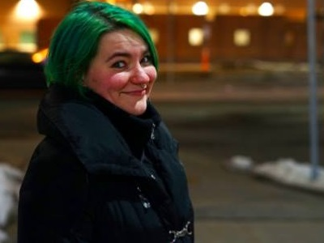

Bonjour! I'm Rylie, named after the song " The Life of Riley" by the Lightning Seeds. The chorus line "It's certain nothing's certain" has really come to capture my approach on life.
In 2016, I graduated from the University of Wisconsin - Stout with a Bachelor of Science in Professional Communications & Emerging Media, a concentration in Digital Humanities, an applied field in Global Studies, and an Art minor. During my time at Stout, I also studied abroad for a semester at Zhejiang International Studies University in Hangzhou. Since graduation, I've been invited back to present to classes and judge art competitions.
I used to work as a Digital Content Specialist at an IoT company in Minneapolis and developed a curiosity for coding there. I was constantly impressed with the different applications that were coming out of hackathons or presented at conferences. When I left, I figured it would be the perfect time to enhance my skills and become known as more than just some "social media person". So onto bootcamp!